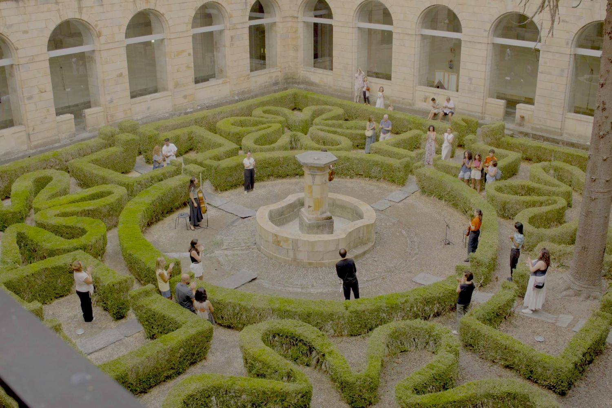

Festival ADAR
Asturias, desde 2021. Festival internacional e itinerante. Co-directora.
ADAR es una asociación cultural fundada en Leiguarda, en el concejo asturiano de Belmonte de Miranda, que produce música y arte contemporáneo en aldeas, iglesias, hórreos, monasterios y paisajes del medio rural. No es un festival que ocurra en una sala y podría ocurrir en otra: cada concierto se piensa para el sitio donde va a sonar.
El programa combina conciertos, encuentros y conferencias con residencias de artistas, encargos a compositores y proyectos site-specific de creadores multidisciplinares que trabajan el territorio como material.
Detrás hay un motivo que no es sólo musical: en muchos de estos pueblos ya no queda casi nada abierto, y un concierto es una razón para que la gente vuelva a juntarse en un sitio que se estaba quedando vacío.
